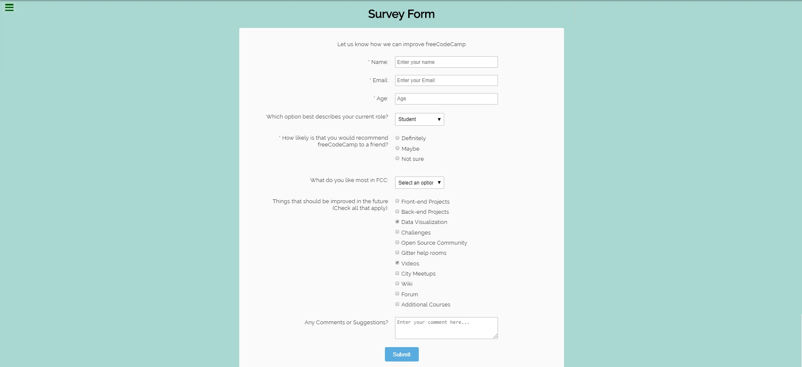
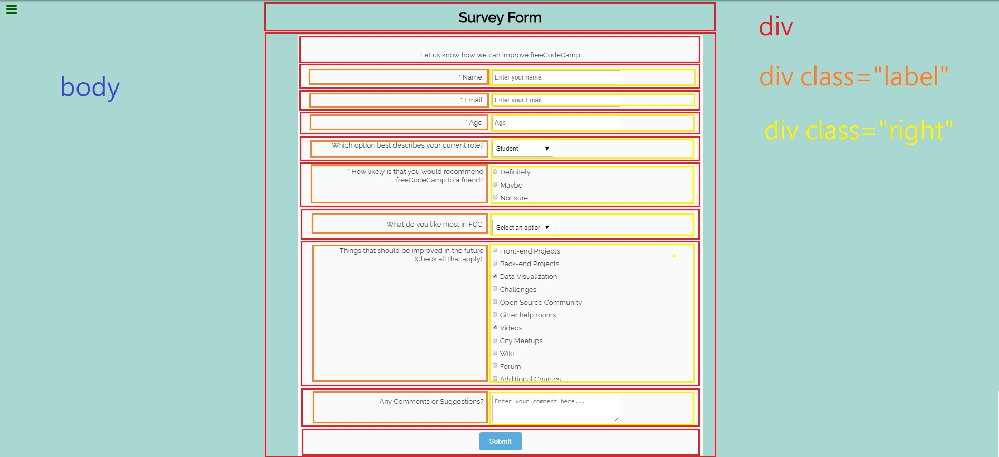
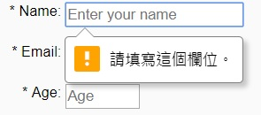
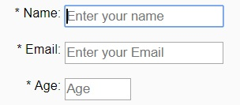

<!DOCTYPE html>
<html>
<head><meta name="generator" content="Hexo 3.8.0">
  <meta charset="utf-8">
  

  
  <title>切版練習2 | yencheng&#39;s code blog</title>
  <meta name="viewport" content="width=device-width, initial-scale=1, maximum-scale=1">
  <meta name="description" content="這次要模仿的範例一樣是 FreeCodeCamp 中的 作業範例 經過一點小嘗試後，決定以下圖 html 架構來切版            剛開始嘗試主要遇到的問題是，要如何讓左邊問卷題目的部分全都靠右對齊，然後又要讓右邊填寫欄的部分靠左對齊，最後決定以一個 row為一個 div ，裡面左右兩邊再用各一個 div 包住後 display 的部分改為 inline-block ，html 架構及 c">
<meta name="keywords" content="html,css,layout,切版">
<meta property="og:type" content="article">
<meta property="og:title" content="切版練習2">
<meta property="og:url" content="http://yencheng.com/2019/06/15/layout/index.html">
<meta property="og:site_name" content="yencheng&#39;s code blog">
<meta property="og:description" content="這次要模仿的範例一樣是 FreeCodeCamp 中的 作業範例 經過一點小嘗試後，決定以下圖 html 架構來切版            剛開始嘗試主要遇到的問題是，要如何讓左邊問卷題目的部分全都靠右對齊，然後又要讓右邊填寫欄的部分靠左對齊，最後決定以一個 row為一個 div ，裡面左右兩邊再用各一個 div 包住後 display 的部分改為 inline-block ，html 架構及 c">
<meta property="og:locale" content="zh">
<meta property="og:image" content="http://yencheng.com/2019/06/15/layout/p1.jpg">
<meta property="og:image" content="http://yencheng.com/2019/06/15/layout/p2.jpg">
<meta property="og:image" content="http://yencheng.com/2019/06/15/layout/p3.jpg">
<meta property="og:image" content="http://yencheng.com/2019/06/15/layout/p4.jpg">
<meta property="og:updated_time" content="2019-06-15T09:44:58.738Z">
<meta name="twitter:card" content="summary">
<meta name="twitter:title" content="切版練習2">
<meta name="twitter:description" content="這次要模仿的範例一樣是 FreeCodeCamp 中的 作業範例 經過一點小嘗試後，決定以下圖 html 架構來切版            剛開始嘗試主要遇到的問題是，要如何讓左邊問卷題目的部分全都靠右對齊，然後又要讓右邊填寫欄的部分靠左對齊，最後決定以一個 row為一個 div ，裡面左右兩邊再用各一個 div 包住後 display 的部分改為 inline-block ，html 架構及 c">
<meta name="twitter:image" content="http://yencheng.com/2019/06/15/layout/p1.jpg">
  
    <link rel="alternate" href="/atom.xml" title="yencheng&#39;s code blog" type="application/atom+xml">
  
  
    <link rel="icon" href="/favicon.png">
  
  
    <link href="//fonts.googleapis.com/css?family=Source+Code+Pro" rel="stylesheet" type="text/css">
  
  <link rel="stylesheet" href="/css/style.css">
</head>
</html>
<body>
  <div id="container">
    <div id="wrap">
      <header id="header">
  <div id="banner"></div>
  <div id="header-outer" class="outer">
    <div id="header-title" class="inner">
      <h1 id="logo-wrap">
        <a href="/" id="logo">yencheng&#39;s code blog</a>
      </h1>
      
    </div>
    <div id="header-inner" class="inner">
      <nav id="main-nav">
        <a id="main-nav-toggle" class="nav-icon"></a>
        
          <a class="main-nav-link" href="/">Home</a>
        
          <a class="main-nav-link" href="/archives">Archives</a>
        
      </nav>
      <nav id="sub-nav">
        
          <a id="nav-rss-link" class="nav-icon" href="/atom.xml" title="RSS Feed"></a>
        
        <a id="nav-search-btn" class="nav-icon" title="Search"></a>
      </nav>
      <div id="search-form-wrap">
        <form action="//google.com/search" method="get" accept-charset="UTF-8" class="search-form"><input type="search" name="q" class="search-form-input" placeholder="Search"><button type="submit" class="search-form-submit">&#xF002;</button><input type="hidden" name="sitesearch" value="http://yencheng.com"></form>
      </div>
    </div>
  </div>
</header>
      <div class="outer">
        <section id="main"><article id="post-layout" class="article article-type-post" itemscope itemprop="blogPost">
  <div class="article-meta">
    <a href="/2019/06/15/layout/" class="article-date">
  <time datetime="2019-06-15T01:10:25.000Z" itemprop="datePublished">2019-06-15</time>
</a>
    
  <div class="article-category">
    <a class="article-category-link" href="/categories/切版/">切版</a>
  </div>

  </div>
  <div class="article-inner">
    
    
      <header class="article-header">
        
  
    <h1 class="article-title" itemprop="name">
      切版練習2
    </h1>
  

      </header>
    
    <div class="article-entry" itemprop="articleBody">
      
        <h3 id="這次要模仿的範例一樣是-FreeCodeCamp-中的-作業範例-經過一點小嘗試後，決定以下圖-html-架構來切版"><a href="#這次要模仿的範例一樣是-FreeCodeCamp-中的-作業範例-經過一點小嘗試後，決定以下圖-html-架構來切版" class="headerlink" title="這次要模仿的範例一樣是 FreeCodeCamp 中的 作業範例 經過一點小嘗試後，決定以下圖 html 架構來切版"></a>這次要模仿的範例一樣是 FreeCodeCamp 中的 <a href="https://codepen.io/freeCodeCamp/full/VPaoNP" target="_blank" rel="noopener">作業範例</a> 經過一點小嘗試後，決定以下圖 html 架構來切版</h3><div align="center">
        
</div>

<h3 id="剛開始嘗試主要遇到的問題是，要如何讓左邊問卷題目的部分全都靠右對齊，然後又要讓右邊填寫欄的部分靠左對齊，最後決定以一個-row為一個-div-，裡面左右兩邊再用各一個-div-包住後-display-的部分改為-inline-block-，html-架構及-css-如下程式碼所示，div-預設-display-為一個-block-，也就是一個-div-就會使用一個橫列，不會跟其他-block-屬性的物件並排，-inline-block-可以讓彼此互相並排。"><a href="#剛開始嘗試主要遇到的問題是，要如何讓左邊問卷題目的部分全都靠右對齊，然後又要讓右邊填寫欄的部分靠左對齊，最後決定以一個-row為一個-div-，裡面左右兩邊再用各一個-div-包住後-display-的部分改為-inline-block-，html-架構及-css-如下程式碼所示，div-預設-display-為一個-block-，也就是一個-div-就會使用一個橫列，不會跟其他-block-屬性的物件並排，-inline-block-可以讓彼此互相並排。" class="headerlink" title="剛開始嘗試主要遇到的問題是，要如何讓左邊問卷題目的部分全都靠右對齊，然後又要讓右邊填寫欄的部分靠左對齊，最後決定以一個 row為一個 div ，裡面左右兩邊再用各一個 div 包住後 display 的部分改為 inline-block ，html 架構及 css 如下程式碼所示，div 預設 display 為一個 block ，也就是一個 div 就會使用一個橫列，不會跟其他 block 屬性的物件並排， inline-block 可以讓彼此互相並排。"></a>剛開始嘗試主要遇到的問題是，要如何讓左邊問卷題目的部分全都靠右對齊，然後又要讓右邊填寫欄的部分靠左對齊，最後決定以一個 row為一個 div ，裡面左右兩邊再用各一個 div 包住後 display 的部分改為 inline-block ，html 架構及 css 如下程式碼所示，div 預設 display 為一個 block ，也就是一個 div 就會使用一個橫列，不會跟其他 block 屬性的物件並排， inline-block 可以讓彼此互相並排。</h3><figure class="highlight html"><table><tr><td class="gutter"><pre><span class="line">1</span><br><span class="line">2</span><br><span class="line">3</span><br><span class="line">4</span><br><span class="line">5</span><br><span class="line">6</span><br><span class="line">7</span><br><span class="line">8</span><br><span class="line">9</span><br><span class="line">10</span><br><span class="line">11</span><br><span class="line">12</span><br><span class="line">13</span><br><span class="line">14</span><br><span class="line">15</span><br><span class="line">16</span><br></pre></td><td class="code"><pre><span class="line"><span class="tag">&lt;<span class="name">div</span> <span class="attr">class</span>=<span class="string">"row"</span>&gt;</span></span><br><span class="line">    <span class="tag">&lt;<span class="name">div</span> <span class="attr">class</span>=<span class="string">"label"</span>&gt;</span><span class="tag">&lt;/<span class="name">div</span>&gt;</span></span><br><span class="line">    <span class="tag">&lt;<span class="name">div</span> <span class="attr">class</span>=<span class="string">"right"</span>&gt;</span><span class="tag">&lt;/<span class="name">div</span>&gt;</span></span><br><span class="line"><span class="tag">&lt;/<span class="name">div</span>&gt;</span></span><br><span class="line"><span class="tag">&lt;<span class="name">div</span> <span class="attr">class</span>=<span class="string">"row"</span>&gt;</span></span><br><span class="line">    <span class="tag">&lt;<span class="name">div</span> <span class="attr">class</span>=<span class="string">"label"</span>&gt;</span><span class="tag">&lt;/<span class="name">div</span>&gt;</span></span><br><span class="line">    <span class="tag">&lt;<span class="name">div</span> <span class="attr">class</span>=<span class="string">"right"</span>&gt;</span><span class="tag">&lt;/<span class="name">div</span>&gt;</span></span><br><span class="line"><span class="tag">&lt;/<span class="name">div</span>&gt;</span></span><br><span class="line"><span class="tag">&lt;<span class="name">div</span> <span class="attr">class</span>=<span class="string">"row"</span>&gt;</span></span><br><span class="line">    <span class="tag">&lt;<span class="name">div</span> <span class="attr">class</span>=<span class="string">"label"</span>&gt;</span><span class="tag">&lt;/<span class="name">div</span>&gt;</span></span><br><span class="line">    <span class="tag">&lt;<span class="name">div</span> <span class="attr">class</span>=<span class="string">"right"</span>&gt;</span><span class="tag">&lt;/<span class="name">div</span>&gt;</span></span><br><span class="line"><span class="tag">&lt;/<span class="name">div</span>&gt;</span></span><br><span class="line"><span class="tag">&lt;<span class="name">div</span> <span class="attr">class</span>=<span class="string">"row"</span>&gt;</span></span><br><span class="line">    <span class="tag">&lt;<span class="name">div</span> <span class="attr">class</span>=<span class="string">"label"</span>&gt;</span><span class="tag">&lt;/<span class="name">div</span>&gt;</span></span><br><span class="line">    <span class="tag">&lt;<span class="name">div</span> <span class="attr">class</span>=<span class="string">"right"</span>&gt;</span><span class="tag">&lt;/<span class="name">div</span>&gt;</span></span><br><span class="line"><span class="tag">&lt;/<span class="name">div</span>&gt;</span></span><br></pre></td></tr></table></figure>

<figure class="highlight css"><table><tr><td class="gutter"><pre><span class="line">1</span><br><span class="line">2</span><br><span class="line">3</span><br><span class="line">4</span><br><span class="line">5</span><br><span class="line">6</span><br><span class="line">7</span><br><span class="line">8</span><br><span class="line">9</span><br><span class="line">10</span><br><span class="line">11</span><br><span class="line">12</span><br><span class="line">13</span><br><span class="line">14</span><br><span class="line">15</span><br><span class="line">16</span><br><span class="line">17</span><br><span class="line">18</span><br></pre></td><td class="code"><pre><span class="line"><span class="selector-class">.label</span>&#123;</span><br><span class="line">    <span class="attribute">display</span>: inline-block;</span><br><span class="line">    <span class="attribute">position</span>: relative;</span><br><span class="line">    <span class="attribute">left</span>:<span class="number">0px</span>;</span><br><span class="line">    <span class="attribute">top</span>: <span class="number">0px</span>;</span><br><span class="line">    <span class="attribute">text-align</span>: right;</span><br><span class="line">    <span class="attribute">width</span>:<span class="number">45%</span>;</span><br><span class="line">    <span class="attribute">vertical-align</span>: top;</span><br><span class="line">&#125;</span><br><span class="line"></span><br><span class="line"><span class="selector-class">.right</span>&#123;</span><br><span class="line">    <span class="attribute">display</span>: inline-block;</span><br><span class="line">    <span class="attribute">position</span>: relative;</span><br><span class="line">    <span class="attribute">right</span>:<span class="number">0px</span>;</span><br><span class="line">    <span class="attribute">top</span>: <span class="number">0px</span>;</span><br><span class="line">    <span class="attribute">text-align</span>: left;</span><br><span class="line">    <span class="attribute">width</span>: <span class="number">45%</span>;</span><br><span class="line">&#125;</span><br></pre></td></tr></table></figure>

<h4 id="position-屬性有四種參數，分別是"><a href="#position-屬性有四種參數，分別是" class="headerlink" title="position 屬性有四種參數，分別是"></a>position 屬性有四種參數，分別是</h4><h4 id="static-被套用到此設定的參數會依照瀏覽器的預設方式而排列，不會被定位。"><a href="#static-被套用到此設定的參數會依照瀏覽器的預設方式而排列，不會被定位。" class="headerlink" title="- static: 被套用到此設定的參數會依照瀏覽器的預設方式而排列，不會被定位。"></a>- static: 被套用到此設定的參數會依照瀏覽器的預設方式而排列，不會被定位。</h4><h4 id="relative-套用到此設定的參數一樣會按照瀏覽器的預設方式而排列，但相對-static-relative-可以被定位，且可以被-top-bottom-left-right-參數改變排列位置，例如-top-10px-為距離頂端-10px-的距離"><a href="#relative-套用到此設定的參數一樣會按照瀏覽器的預設方式而排列，但相對-static-relative-可以被定位，且可以被-top-bottom-left-right-參數改變排列位置，例如-top-10px-為距離頂端-10px-的距離" class="headerlink" title="- relative: 套用到此設定的參數一樣會按照瀏覽器的預設方式而排列，但相對 static relative 可以被定位，且可以被 top, bottom, left, right 參數改變排列位置，例如 top:10px 為距離頂端 10px 的距離"></a>- relative: 套用到此設定的參數一樣會按照瀏覽器的預設方式而排列，但相對 static relative 可以被定位，且可以被 top, bottom, left, right 參數改變排列位置，例如 top:10px 為距離頂端 10px 的距離</h4><h4 id="absolute-套用到此參數的元素一樣為可以被定位的元素，但是他所參考的相對位置為上一層可以被定位的元素，如果上一層為-static-不能被定位-，則會參考-body-元素。此參數一樣可以套用-top-bottom-left-right。"><a href="#absolute-套用到此參數的元素一樣為可以被定位的元素，但是他所參考的相對位置為上一層可以被定位的元素，如果上一層為-static-不能被定位-，則會參考-body-元素。此參數一樣可以套用-top-bottom-left-right。" class="headerlink" title="- absolute: 套用到此參數的元素一樣為可以被定位的元素，但是他所參考的相對位置為上一層可以被定位的元素，如果上一層為 static(不能被定位) ，則會參考 body 元素。此參數一樣可以套用 top, bottom, left, right。"></a>- absolute: 套用到此參數的元素一樣為可以被定位的元素，但是他所參考的相對位置為上一層可以被定位的元素，如果上一層為 static(不能被定位) ，則會參考 body 元素。此參數一樣可以套用 top, bottom, left, right。</h4><h4 id="fixed-套用此設定的元素相對-absolute-參考的對象為上一層可被定義的元素-fixed-的定位是參考瀏覽器視窗，再根據-top-bottom-left-right-來調整位置。"><a href="#fixed-套用此設定的元素相對-absolute-參考的對象為上一層可被定義的元素-fixed-的定位是參考瀏覽器視窗，再根據-top-bottom-left-right-來調整位置。" class="headerlink" title="- fixed: 套用此設定的元素相對 absolute 參考的對象為上一層可被定義的元素 fixed 的定位是參考瀏覽器視窗，再根據 top, bottom, left, right 來調整位置。"></a>- fixed: 套用此設定的元素相對 absolute 參考的對象為上一層可被定義的元素 fixed 的定位是參考瀏覽器視窗，再根據 top, bottom, left, right 來調整位置。</h4><p>===</p>
<h3 id="這次切版多注意到了幾個實用的參數"><a href="#這次切版多注意到了幾個實用的參數" class="headerlink" title="這次切版多注意到了幾個實用的參數"></a>這次切版多注意到了幾個實用的參數</h3><h4 id="input-標籤的-require-及-placeholder-參數"><a href="#input-標籤的-require-及-placeholder-參數" class="headerlink" title="input 標籤的 require 及 placeholder 參數"></a>input 標籤的 require 及 placeholder 參數</h4><h4 id="require-設定此參數的-input-標籤為必填項目，如果未填，送出表單的時候會無法送出，如下左圖"><a href="#require-設定此參數的-input-標籤為必填項目，如果未填，送出表單的時候會無法送出，如下左圖" class="headerlink" title="- require: 設定此參數的 input 標籤為必填項目，如果未填，送出表單的時候會無法送出，如下左圖"></a>- require: 設定此參數的 input 標籤為必填項目，如果未填，送出表單的時候會無法送出，如下左圖</h4><h4 id="placeholder-此參數可以設定一個字串，效果為該欄未填寫任何東西時，會顯示一串文字說明該欄，如下右圖"><a href="#placeholder-此參數可以設定一個字串，效果為該欄未填寫任何東西時，會顯示一串文字說明該欄，如下右圖" class="headerlink" title="- placeholder: 此參數可以設定一個字串，效果為該欄未填寫任何東西時，會顯示一串文字說明該欄，如下右圖"></a>- placeholder: 此參數可以設定一個字串，效果為該欄未填寫任何東西時，會顯示一串文字說明該欄，如下右圖</h4><div align="center">
        
</div>

<p>===</p>
<h2 id="成品參考這裡"><a href="#成品參考這裡" class="headerlink" title="成品參考這裡"></a>成品參考<a href="https://codepen.io/yencheng/pen/agdweR" target="_blank" rel="noopener">這裡</a></h2>
      
    </div>
    <footer class="article-footer">
      <a data-url="http://yencheng.com/2019/06/15/layout/" data-id="cjwxcfa050004vstfco7y5eem" class="article-share-link">Share</a>
      
      
  <ul class="article-tag-list"><li class="article-tag-list-item"><a class="article-tag-list-link" href="/tags/css/">css</a></li><li class="article-tag-list-item"><a class="article-tag-list-link" href="/tags/html/">html</a></li><li class="article-tag-list-item"><a class="article-tag-list-link" href="/tags/layout/">layout</a></li><li class="article-tag-list-item"><a class="article-tag-list-link" href="/tags/切版/">切版</a></li></ul>

    </footer>
  </div>
  
    
<nav id="article-nav">
  
  
    <a href="/2019/06/09/layout/" id="article-nav-older" class="article-nav-link-wrap">
      <strong class="article-nav-caption">Older</strong>
      <div class="article-nav-title">切版練習</div>
    </a>
  
</nav>

  
</article>

</section>
        
          <aside id="sidebar">
  
    
  <div class="widget-wrap">
    <h3 class="widget-title">Categories</h3>
    <div class="widget">
      <ul class="category-list"><li class="category-list-item"><a class="category-list-link" href="/categories/切版/">切版</a></li></ul>
    </div>
  </div>


  
    
  <div class="widget-wrap">
    <h3 class="widget-title">Tags</h3>
    <div class="widget">
      <ul class="tag-list"><li class="tag-list-item"><a class="tag-list-link" href="/tags/css/">css</a></li><li class="tag-list-item"><a class="tag-list-link" href="/tags/html/">html</a></li><li class="tag-list-item"><a class="tag-list-link" href="/tags/layout/">layout</a></li><li class="tag-list-item"><a class="tag-list-link" href="/tags/切版/">切版</a></li></ul>
    </div>
  </div>


  
    
  <div class="widget-wrap">
    <h3 class="widget-title">Tag Cloud</h3>
    <div class="widget tagcloud">
      <a href="/tags/css/" style="font-size: 10px;">css</a> <a href="/tags/html/" style="font-size: 10px;">html</a> <a href="/tags/layout/" style="font-size: 10px;">layout</a> <a href="/tags/切版/" style="font-size: 10px;">切版</a>
    </div>
  </div>

  
    
  <div class="widget-wrap">
    <h3 class="widget-title">Archives</h3>
    <div class="widget">
      <ul class="archive-list"><li class="archive-list-item"><a class="archive-list-link" href="/archives/2019/06/">June 2019</a></li></ul>
    </div>
  </div>


  
    
  <div class="widget-wrap">
    <h3 class="widget-title">Recent Posts</h3>
    <div class="widget">
      <ul>
        
          <li>
            <a href="/2019/06/15/layout/">切版練習2</a>
          </li>
        
          <li>
            <a href="/2019/06/09/layout/">切版練習</a>
          </li>
        
          <li>
            <a href="/2019/06/09/hello-world/">Hello World</a>
          </li>
        
      </ul>
    </div>
  </div>

  
</aside>
        
      </div>
      <footer id="footer">
  
  <div class="outer">
    <div id="footer-info" class="inner">
      &copy; 2019 YENCHENG LIU<br>
      Powered by <a href="http://hexo.io/" target="_blank">Hexo</a>
    </div>
  </div>
</footer>
    </div>
    <nav id="mobile-nav">
  
    <a href="/" class="mobile-nav-link">Home</a>
  
    <a href="/archives" class="mobile-nav-link">Archives</a>
  
</nav>
    

<script src="//ajax.googleapis.com/ajax/libs/jquery/2.0.3/jquery.min.js"></script>


  <link rel="stylesheet" href="/fancybox/jquery.fancybox.css">
  <script src="/fancybox/jquery.fancybox.pack.js"></script>


<script src="/js/script.js"></script>


  </div>
</body>
</html>